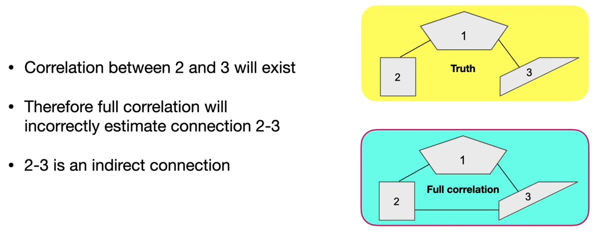

fMRI
Starting off
If you prefer to have a working understanding of the issues that fMRI data acquisition and analysis present before playing around with the software, I recommend starting with the introductory material from FSL and then a read of 'The Statistical Analysis of fMRI Data' Martin A.Lindquist
This seems like a good resource as well:
https://towardsdatascience.com/exploring-cognitive-differences-via-resting-state-networks-2112bf5291e2
This paper has a very thorough example of typical fMRI preprocessing steps:
https://www.frontiersin.org/articles/10.3389/fnins.2017.00685/full
Free course:
https://ucl.podia.com/designing-and-analysing-fmri-experiments
Pulse-sequence considerations
If you are planning a study, here is some information to consider:
Do you want a low TR?
So why would someone want low TR?:
- Improve temporal precision:
A shorter TR (e.g., < 2 seconds) allows for more frequent sampling of the BOLD signal. Even though the HRF is slow, a faster TR can provide better temporal precision and align the timing of neural events more accurately to the fMRI signal. A shorter TR helps capture fast transitions in brain states, which can be important in cognitive tasks or resting-state analysis. A review of an updated view of the HRF can be found here: 10.1016/j.pneurobio.2021.102174
In resting-state fMRI (rs-fMRI), TR < 2 seconds can be important because spontaneous brain activity happens continuously and can exhibit rapid changes over time. A faster TR provides better sampling to capture the fluctuations within resting-state networks and increases the ability to detect temporal correlations between regions of the brain.
In task-based fMRI, shorter TR acquisitions (on the order of 1000 ms) provide better discrimination between the activated and nonactivated brain tissue regions than do long-TR acquisitions (on the order of 4000 ms) [10.1002/mrm.1253].
- Improve statistical power:
More time points reduce signal noise and improve the ability to detect subtle changes (shape and timing) in the BOLD signal, improving sensitivity to brain activity. It also helps avoid aliasing with non-neuronal signals of higher-frequency.
Why would someone want to avoid low TRs?:
SNR is exponentially lower due to the reduced T1 recovery which can occur within the TR [10.1002/9781118633953].
At TRs below 1 second, T1 effects become more evident, with reduced contrast between the white and grey matter. This may impact registration algorithms intended to correct head-motion or to register functional data with anatomical images [10.1016/j.neuroimage.2013.05.039].
General concensus:
A TR of ~1000±200 ms is likely to be the optimal range for many studies [10.1016/j.neuroimage.2018.05.011; 10.1002/mrm.27498]
References:
10.1016/j.pneurobio.2021.102174: Polimeni JR, Lewis LD. Imaging faster neural dynamics with fast fMRI: A need for updated models of the hemodynamic response. _Progress in Neurobiology_. 2021;207:102174
10.1016/j.neuroimage.2013.05.039: Smith SM, Beckmann CF, Andersson J, et al. Resting-state fMRI in the Human Connectome Project. NeuroImage. 2013;80:144-168.
10.1002/9781118633953: Brown RW, Cheng YCN, Haacke EM, Thompson MR, Venkatesan R. Magnetic Resonance Imaging: Physical Principles and Sequence Design. John Wiley & Sons; 2014.
10.1016/j.neuroimage.2018.05.011: Demetriou L, Kowalczyk OS, Tyson G, Bello T, Newbould RD, Wall MB. A comprehensive evaluation of increasing temporal resolution with multiband-accelerated protocols and effects on statistical outcome measures in fMRI. _NeuroImage_. 2018;176:404-416.
10.1002/mrm.27498: McDowell AR, Carmichael DW. Optimal repetition time reduction for single subject event-related functional magnetic resonance imaging. _Magnetic Resonance in Medicine_. 2019;81(3):1890-1897.
10.1002/mrm.1253: Constable TR, Spencer DD. Repetition time in echo planar functional MRI. 2001
What kind of acceleration should I use?
Stop Using Crazy Multiband Sequences
Don’t get me wrong, I love multiband, it’s amazing, but I use it very carefully. My ‘standard’ sequence these days is MB = 2 and GRAPPA = 2. This gives a combined 4x (MB*GRAPPA) acceleration, and gives you 40-ish slices of 3x3x3mm voxels — plenty for whole-brain coverage — and a TR of about 1.25s. I’ve pushed it to MB3 on occasion when I wanted to do specific things like use thinner slices to mitigate susceptibility problems in orbito-frontal cortex, but I wouldn’t push it higher than that. (I see no problem in combining multiband with slice-based acceleration like GRAPPA/SENSE, though I know some people are dead-set against it. GRAPPA/SENSE are old, tried-and-tested technology, and they work great. Why not use them and keep the multiband acceleration factor lower?).
Preprocessing
A lot of the preprocessing can be automated using fmriprep: see fmri-prep
A good paper that goes over some of the common steps is this alternative preprocessing software (FuNP): https://www.frontiersin.org/articles/10.3389/fninf.2019.00005/full
After running fmriprep, though, there will be some additional steps you might want to do:
Dummy scans:
Removal of the first 5 to 10 volumes to allow for steady-state magnetisation:
fslroi <input> <output> 5 -1Note: indexing (in both time and space) starts with 0 not 1! Inputting -1 for a size will set it to the full image extent for that dimension.
Intensity Normalization
fslmaths <input> -ing 10000 <output>Nuisance Variable Removal
Nuisance regression of WM and CSF):
1-a) With the WM, we can do:
fslmaths WM_mask_in_highres_space -ero WM_mask_in_highres_space_erodedflirt -in WM_mask_in_highres_space_eroded \
-applyxfm \
-init rest.feat/reg/highres2example_func.mat\
-ref example_func.nii.gz \
-out WM_in_func_spacefslmeants -i denoised_func_data.nii.gz -m WM_mask_in_func_space --no_bin -o WM_in_func_bin_timeseriesNote: (i) The WM_mask_highres_space can be obtained in several ways (e.g., FSL/fast, SPM12/segment)
Weighted segmentation information is actually good stuff because it allows more certainty for WM voxels (vs. non-WM voxels). To use the information, use —no_bin in fslmeants.
(ii) You want to erode the WM mask to begin with, in order to increase the certainty (e.g., reducing some boundaries with GM).
1-b) We can use similar procedure as above to obtain CSF_in_func_bin_timeseries
1-c) To regress out these two nuisance regressors:
paste WM_in_func_bin_timeseries and CSF_in_func_bin_timeseries into nuisance_timeseries
fslmaths denoised_func_data -Tmean tempMean
fsl_glm -i denoised_func_data -d nuisance_timeseries -demean -res_out=residualNote: use —demean to mean-center the nuisance timeseries so that the residual makes sense. Don’t use —des_norm or —dat_norm because we are looking at the residual (but not the GLM betas) here. You also want to add the mean back so that it is a firm data set (see step (3) below).
Using outputs from fmriprep:
From https://www.biorxiv.org/content/10.1101/2023.06.23.546329v1.full.pdf:
"Denoising followed the anatomical CompCor (aCompCor) method of removing cardiac and motion artifacts, by regressing out of each individual’s functional data the first 5 principal components corresponding to white matter signal, and the first 5 components corresponding to cerebrospinal fluid signal, as well as six subject-specific realignment parameters (three translations and three rotations) and their first-order temporal derivatives, and nuisance regressors identified by the artifact detection software art: https://www.nitrc.org/projects/artifact_detect/ "
Temporal Filtering
For highpass only (recommended) [note: "highpass" removes low-frequency signals. "lowpass" does the opposite]
For a TR = 2.0 s and I if you want to highpass filter at 100 seconds, this means 50 TRs (volumes), and thus highpass sigma is 25.0 TR (volumes).
fslmaths <input> -Tmean tempMean
fslmaths <input> -bptf <sigma> -1 -add tempMean <output>
imrm tempMeanSpatial Smoothing
To smooth or not to smooth? And by how much?
https://www.ncbi.nlm.nih.gov/pmc/articles/PMC7462426
3dmerge -1blur_fwhm <kernel size in mm> -doall -prefix <output> <input>MELODIC (Multivariate Exploratory Linear Optimized Decomposition into Independent Components)
Multivariate Exploratory Linear Optimized Decomposition into Independent Components (MELODIC) uses ICA to decompose a full 4D timeseries dataset (either a single subject or multiple subjects that have been concatenated together) into 'components'. These components could be motion artifacts, cardiac/breathing artifacts, MRI noise artifacts, or resting-state brain networks, for instance.
I only have experience running Melodic through the GUI. To run, just type 'Melodic' in terminal
Here is the FSL Practical guide (very useful)
From the link above, please note the section: Classifying and removing noise components from single-subject ICA
This is very important to learn to classify and remove motion/noise/scanner/other artifacts (see below as well)
Here is an example of my own:
I found this link VERY useful for actually figuring out how to do that (not necessarily how to identify though); and this link is for a lecture pdf
In order to manually classify, here is an example of how to start FSLeyes
fsleyes --scene melodic -ad Rest_EPI.ica/filtered_func_data.ica &After signals have been classified, you then save the classifications to a .txt file, the end of which will look like this:
22, Cardiac, True
23, Signal, False
24, Unclassified noise, True
25, Movement, True
26, Movement, True
27, Movement, True
28, Signal, False
29, Unclassified noise, True
30, Unclassified noise, True
[1, 2, 3, 4, 5, 6, 7, 8, 10, 11, 15, 18, 20, 21, 22, 24, 25, 26, 27, 29, 30]Those numbers at the end are what you want: they are all the non-brain signals that you want to get rid of.
Here's an example of how to get rid of those signals:
fsl_regfilt -i filtered_func_data.nii.gz -d filtered_func_data.ica/melodic_mix -o filtered_func_data_clean.nii.gz -f "1, 2, 3, 4, 5, 6, 7, 8, 10, 11, 15, 18, 20, 21, 22, 24, 25, 26, 27, 29, 30"-i is the input from the melodic output; -d is for the melodic_mix; and -o is just your output filename, which is your new cleaned up 4D file.
Melodic through command line
You can automate Melodic and not have to use the GUI every time.
This requires having a design.fsf file, which Melodic GUI creates every time you run an analysis.
Using a sample one, you can edit it with a simple editer, like 'nano'
nano design.fsfYou will have to change the file name and directory, the output directory, possibly the number of volumes, etc.
When you are ready, all you have to do is run:
feat design.fsfTo suppress the automatic opening of the browser window, make sure to uncheck the "Progress Watcher" in the Misc Tab.
Or, change the featwatcher_yn parameter in the design.fsf from a 1 to a 0:
# Run Featwatcher
set fmri(featwatcher_yn) 0easy fsl_regfilt
components=$(awk 'NR>1{print $1}' RS=[ FS=] labels)
fsl_regfilt -i filtered_func_data.nii.gz -d filtered_func_data.ica/melodic_mix -o filtered_func_data_clean.nii.gz -f "${components}"Signal Classification
Former MASc student Olivia Campbell going through ICA signal classification: https://drive.google.com/file/d/1hxBUNFbtUHBEKMYWt1bCzclwZSHvSHEH/preview
Signal classification flowchat:
And from FSL:
Tips for manual classification: (taken from [https://www.sciencedirect.com/science/article/pii/S1053811916307583 ])
- About 70% of components should be noise, the other 30% signal
- So for the 70 component ICA,there should be about 20 signals
- The first components that Melodic lists are usually noise
- Make sure that the signal is located in grey matter throughout ALL planes
- The overall aim is to preserve as much signal as possible
- Components are "innocent until proven guilty" (components are signals until proven noise)
- Use the spatial map as the main decision maker, then look at time series and power spectra
- General criteria for signal classification:
- Spatial maps need to be in grey matter, away from main veins, WM, CSF
- Time series should be without sudden or abrupt changes
- Power spectra should largely show power at low frequency
For automatic classification, you can use FIX, but that requires you to manually train the data…
or ICA-AROMA which I think is supposed to work well on getting rid of motion… (here's the manual)
Other options are:
https://fmriprep.org/en/stable/index.html
https://github.com/BMHLab/DiCER
https://www.nitrc.org/projects/artifact_detect
ICA FIX
https://fsl.fmrib.ox.ac.uk/fsl/fslwiki/FIX/UserGuide
Install
FIX requires FSL, Matlab (should be installed on all our computers), and R with the following packages installed: 'kernlab' version 0.9.24; 'ROCR' version 1.0.7; 'class' version 7.3.14; 'party' version 1.0.25; 'e1071' version 1.6.7; 'randomForest' version 4.6.12
To install these R packages; enter R (type: R) and enter:
install.packages(c("kernlab","ROCR","e1071","randomForest","devtools"))Then:
require(devtools)
install_version("mvtnorm", version="1.0-8")
install_version("multcomp", version="1.4-8")
install_version("coin", version="1.2-2")
install_version("party", version="1.0-25")When asked if you want to update to a newer version, just press enter ('empty line to skip updates')
To quit R, type: quit()
Setup:
- Unpack FIX (1.06.15) with
tar xvfz fix.tar.gz(ortar xvf fix.tarif your browser has already uncompressed the file).
We installed in: /usr/local/fix
- Download and install matlab compiled runtime (MCR) for your operating system (mac, linux)
NOTE: We set our Matlab to be the installed version (which matlab). See the settings.sh file in: /usr/local/fix]
- See the README file for further setup instructions (in
/usr/local/fix
Path
Change your path to include: /usr/local/fix
Files needed
filtered_func_data.nii.gz preprocessed 4D data
filtered_func_data.ica melodic (command-line program) full output directory
mc/prefiltered_func_data_mcf.par motion parameters created by mcflirt (in mc subdirectory)
mask.nii.gz valid mask relating to the 4D data
mean_func.nii.gz temporal mean of 4D data
reg/example_func.nii.gz example image from 4D data
reg/highres.nii.gz brain-extracted structural
reg/highres2example_func.mat FLIRT transform from structural to functional space
design.fsf FEAT/MELODIC setup file; if present, this controls the
default temporal filtering of motion parametersThe design.fsf is optional.
Here is a sample script that will create the FIX input directory and run FIX. You will need to change the files to suit your needs.
highDir=/home/johann.drayne/testing/fix/denoise/
derivDir=/mnt/WeberLab/Projects/NeonateSucrose/SickKids/derivatives/
#### output Directory ####
outputDir=${highDir}output
#### training file that you give to FIX ####
classifier=/mnt/WeberLab/Data/dHCP/train35.RData
#### skull stripped anatomical image ####
anat=${highDir}MS040008-session1_restore_brain
#### functional image registered to anat space ####
fmri2anat=${highDir}_bold2template
#### motion corrected input functional image ####
fmri=${derivDir}motioncorrectedfmri/_MS040008motioncorrected.nii.gz
#### linear transform of functional to anat space ####
f2amat=${derivDir}tempmotioncorrectedfmriv01mat/MS040008/_rigid_avgfmri_to_t10GenericAffine.mat
mkdir ${outputDir}
mkdir ${outputDir}/split/
mkdir ${outputDir}/reg/
mkdir ${outputDir}/mc
### splitting 4D file to add example image into output/reg #####
fslsplit ${fmri} ${outputDir}/split/
cp ${outputDir}/split/0000.nii.gz ${outputDir}/reg/example_func.nii.gz
echo "----- Func single volume copied to output -----"
### creating binary mask using fslmaths #####
antsApplyTransforms -d 3 -o ${outputDir}/anat2func.nii.gz -t [${f2amat}, 1] -r ${outputDir}/reg/example_func.nii.gz -i ${anat}.nii
fslmaths ${outputDir}/anat2func -thrp 5 -bin ${outputDir}/mask
echo "----- Binary Mask Complete -----"
#### running melodic on fmri #####
melodic -i ${derivDir}motioncorrectedfmri/_MS040008motioncorrected -o ${outputDir}/filtered_func_data.ica -m ${outputDir}/mask --nobet -v
echo "----- MELODIC Complete -----"
#### adding mean to output #####
cp ${outputDir}/filtered_func_data.ica/mean.nii.gz ${outputDir}/mean_func.nii.gz
echo "----- mean added to output -----"
#### adding skull stripped anat to output/reg/ #####
cp ${anat}.nii ${outputDir}/reg/highres.nii.gz
echo "----- Skull Stripped anat copied to output -----"
#### adding func to output #####
cp ${fmri} ${outputDir}/filtered_func_data.nii.gz
echo "----- Func copied to output -----"
#### creating .par file in output/mc/ with mcflirt #####
mcflirt -in ${fmri} -plots -o ${outputDir}/mc/prefiltered_func_data_mcf
echo "----- mcflirt motion parameters in output -----"
#### creating .mat transformation from ANTs to FSL format anat -> func space#####
c3d_affine_tool -itk ${f2amat} -ref ${anat}.nii -src ${outputDir}/reg/example_func.nii.gz -ras2fsl -o ${outputDir}/reg/highres2example_func.mat -inv
echo "----- .mat file added to output -----"
### running FIX #####
/usr/local/fix/fix -f ${outputDir}/
echo "----- Extracted Feautres -----"
/usr/local/fix/fix -c ${outputDir}/ ${classifier} 5
echo "----- Classified ICA Components ------"
/usr/local/fix/fix -a ${outputDir}/fix4melview_train35_thr5.txt
echo "----- FIX Complete -----"Global RSNs
Common Resting State Network atlases exist online. Here is one resource:
https://www.fmrib.ox.ac.uk/datasets/brainmap+rsns/
Identifying RSNs
Maps 120, 220 and 320 (“visual”) correspond to medial, occipital pole, and lateral visual areas. The explicitly visual behavioral domains correspond most strongly to these maps, and paradigms cognition–language–orthography and cognition–space correspond to the occipital pole and lateral visual maps, respectively. We presume that the “orthography†correspondence reflects the visual nature of stimuli used in these studies (e.g., written-word forms).
Map 420 (“default mode network”) includes medial parietal (precuneus and posterior cingulate), bilateral inferior–lateral–parietal and ventromedial frontal cortex. This is often referred to as the default mode network (9), and is possibly the most widely studied RSN in the resting-state FMRI literature. This is also the network that is most commonly seen as deactivating in task-based FMRI experiments; hence, one would not expect this map to correspond strongly to any particular behavioral domain, because more contrasts associated with any given paradigm will, on average, be looking for positive activations rather than deactivations (or negative contrasts). However, there will be some studies that contain a “deactivation†contrast, and hence, we are not surprised that this map is found in our analysis of BrainMap. Indeed, inspection of the full set of experiments reveals that this map does indeed correspond in general to negative contrasts, in particular in cognitive paradigms.
Map 520 (“cerebellum”) covers the cerebellum. Because of limited field of view of the MRI acquisitions in some of the resting FMRI subjects, more inferior parts of the cerebellum are not included in the multisubject RSN analysis. This corresponds most strongly to action–execution and perception–somesthesis–pain domains.
Map 620 (“sensorimotor”) includes supplementary motor area, sensorimotor cortex, and secondary somatosensory cortex. This corresponds closely to the activations seen in bimanual motor tasks and was the first resting state network to be identified in FMRI data (1). This corresponds most strongly to the action–execution and perception–somesthesis paradigms.
Map 720 (“auditory”) includes the superior temporal gyrus, Heschl's gyrus, and posterior insular. It includes primary and association auditory cortices. This corresponds most strongly to action–execution–speech, cognition–language–speech, and perception–audition paradigms.
Map 820 (“executive control”) covers several medial–frontal areas, including anterior cingulate and paracingulate. This corresponds strongly to several cognition paradigms, as well as action–inhibition, emotion, and perception–somesthesis–pain.
Maps 920 and 1020 (“frontoparietal”) cover several frontoparietal areas. These are the only maps to be strongly lateralized, and are largely left–right mirrors of each other. They correspond to several cognition/language paradigms. In addition, map 920 corresponds strongly to perception–somesthesis–pain; this is consistent with the insular areas seen (see SI for more detailed figures showing all maps). Map 1020 corresponds strongly to cognition–language paradigms, which is consistent with the Broca's and Wernicke's areas seen in the map (see SI for slices more clearly showing these areas). Given the known lateralization of language function, it is not surprising that these (mirrored) networks have such different behavioral domain associations.
Functional Connectivity Analysis
Run MELODIC on your group data in Concat-ICA mode ("Multi-session temporal concatenation"). Find the file containing the ICA spatial maps output by the group-ICA; this will be called something like melodic_IC.nii.gz and will be inside a something.ica MELODIC output directory.
Use FSL's Glm (or any other method) to create your multi-subject design matrix and contrast files (design.mat / design.con).
Run FSL's dual_regression. Just type the script name to get the usage - should be mostly self-explanatory:
- The 4D group spatial IC maps file will be something like somewhere.ica/melodic_IC
- The des_norm option determines whether to variance-normalise the timecourses created by stage 1 of the dual regression; it is these that are used as the regressors in stage 2. If you don't normalise them, then you will only test for RSN "shape" in your cross-subject testing. If you do normalise them, you are testing for RSN "shape" and "amplitude".
- One easy way to get the list of inputs (all subjects' standard-space 4D timeseries files) at the end of the command is to use the following (instead of listing the files explicitly, by hand), to get the list of files that was fed into your group-ICA: `cat somewhere.gica/.filelist`
Statistics
Finally you'll want to use FSL's randomise
Example:
From my 2014 paper: https://www.sciencedirect.com/science/article/pii/S0278584614000773
Group differences were obtained from the Dual Regression program, where the different sets of spatial maps were collected across subjects into single 4D files (one per RSN) and analyzed across groups (OCD vs. Control) using non-parametric statistical analysis involving permutation testing (Beckmann et al., 2009). The number of permutations was set at 10,000 to maximize alpha level calculations (Webster, 2012). As this study is the first ICA analysis of OCD with no specific RSN being tested, it was treated as exploratory in nature (i.e. as a pilot study); thus, correction for multiple-comparisons (Bonferroni) was not performed.
Network Modelling Analysis
FSL has a great set of tutorial videos using their program FSL-NETS. The videos start with preprocessing:
https://www.youtube.com/watch?v=Bm3kUPP-tIc
Nodes:
Nodes are how you decide to divide/segment the brain
Contiguous vs Non-contiguous:
Contiguous nodes are single ROIs
Non-contiguous nodes might be two or more ROIs together: for example, similar regions across hemispheres (left and right)
Binary or Weighted:
Binary nodes are thresholded and then given 0 or 1. This is intuitive for graph representation and interpretation
Weighted is when you do not threshold and just use the raw correlation value. This fits with complex brain organization and allows measurement error and physiological limits (HRF)
Node Definition:
- Anatomical (e.g. Harvard-Oxford) - not great for resting state fMRI
- Functional atlases (e.g. Yeo 2011 / Glasser 2016) - not data-driven
- Data-driven parcellation (e.g. ICA, clustering, gradients) - data-driven
Timeseries:
From each node, you will average the time-series of all the voxels within the node to give that node’s time-series
For getting the time-series from ICA, use FSL’s dual-regression
Edges:
This is the temporal correlation of the timeseries between nodes
You can represent edges in three different ways:
- presence or absence of edges
- strength of edges
- and directionality of edges (hard to estimate with BOLD data)
Also, there are direct and indirect connections: where node 2 is indirectly correlated with node 3 through node 1

To avoid this, you can regress out node 1 from both 2 and 3. If 2 and 3 are still correlated, a direct connection exists. When you perform this correction, it is called partial correlation.
Network Matrix:
Colored matrix which tells you node-node strength
Hierarchical clustering:
This groups common nodes together
Note: this is not a statistical test
Group Analysis
Network Matrix → take just the upper diagonal → convert this to a single dimension of just edge values → then do this for all subjects to create a 2D matrix where each row is a subject, and each column an edge.
To perform group level comparisons, you would then run a GLM
Notes on Distortion Correction
https://docs.google.com/document/d/17kC6q0hr3q6vlMEFDnIqEvpmmBxvLBc5F_PUfsyxLvU/edit
Multi-echo fMRI
Post-processing Pipeline(s):
XCP-D
https://xcp-d.readthedocs.io/en/latest/index.html
XCP-D paves the final section of the reproducible and scalable route from the MRI scanner to functional connectivity data in the hands of neuroscientists. We developed XCP-D to extend the BIDS and NiPrep apparatus to the point where data is most commonly consumed and analyzed by neuroscientists studying functional connectivity. Thus, with the development of XCP-D, data can be automatically preprocessed and analyzed in BIDS format, using NiPrep-style containerized code, all the way from the scanner to functional connectivity matrices.
CONN Toolbox
http://www.nitrc.org/projects/conn
https://web.conn-toolbox.org/fmri-methods/denoising-pipeline
Tutorial:
https://andysbrainbook.readthedocs.io/en/latest/FunctionalConnectivity/CONN_Overview.html